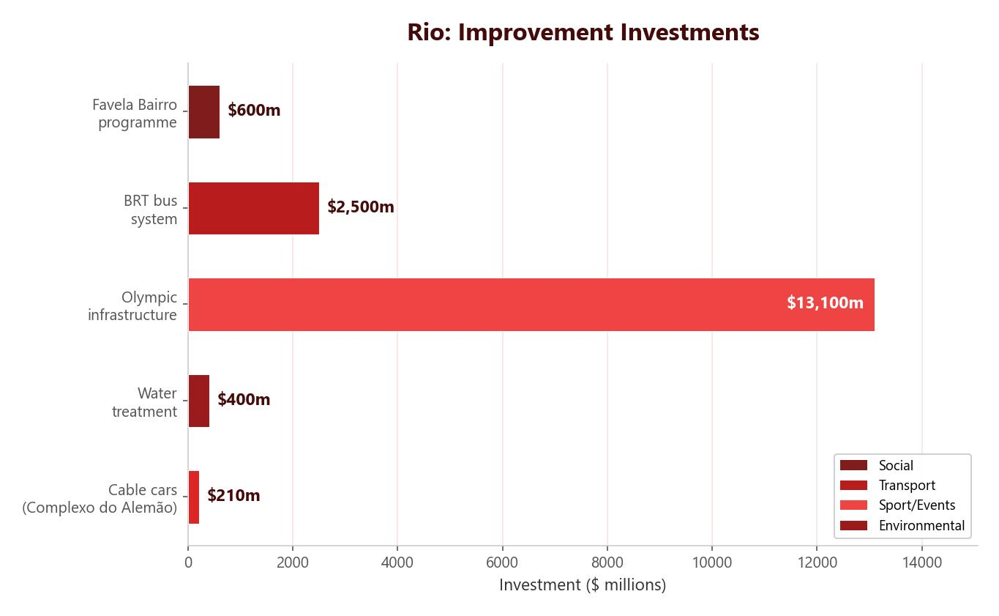

The Favela Bairro Scheme
The Favela Bairro (meaning ‘Favela Neighbourhood’) project was set up by the Rio authorities in the 1990s. The aim was to improve living conditions in the favelas rather than demolishing them. It involved three main approaches: site and service schemes, self-help schemes and pacification.
Site and Service Schemes
Site and service schemes provide land and basic infrastructure for residents to build on. In Complexo do Alemão (home to 26,000 people), the authorities provided access to fresh water, sanitation and paved roads. Schools and health centres were built. Residents received low-interest loans to buy building materials.
The centrepiece of the Complexo do Alemão improvements was a cable car system linking the hilltop favela to the commercial centre of Ipanema. Each resident received one free return trip per day, transforming access to employment — a journey that previously required a two-hour walk down steep, unpaved paths. The cable car also brought a sense of legitimacy to the community, with stations doubling as civic buildings housing health clinics and social services.
Limitations: The $1 billion budget cannot cover all 1,000 favelas in Rio. Infrastructure is not being properly maintained — the cable car itself was shut down in 2016 due to lack of maintenance funding. Residents sometimes lack the skills to make repairs. Rents have risen in improved areas, pushing the poorest people out.
Self-Help Schemes
The authorities provide tools, training and low-interest loans so residents can improve their own homes. This gives communities a sense of identity and teaches people trades, improving their employability. Because residents provide the labour, money saved on construction can be spent on basic amenities like electricity and water. Most favela homes are now made from concrete and brick with basic sanitation, plumbing and electricity.
Limitations: Some residents must buy the improved house or pay rent. Those who are unemployed or on very low pay cannot afford this, so they are forced to move away from the area they were being helped in.
Quality of life refers to the wellbeing of individuals or groups — typically measured by access to food, education, water and housing. Each of the three Favela Bairro approaches improves quality of life in different ways.
Site and service: Providing clean water, sanitation and paved roads directly reduces the spread of disease and improves mobility. Residents can travel to work and access health services more easily, leading to better physical and economic wellbeing.
Self-help: Teaching residents trades such as bricklaying and plumbing improves their employability. Higher employment leads to increased household income, which in turn reduces poverty and allows families to afford better food, education and healthcare.
UPPs: Reducing crime means residents feel safer in their own neighbourhoods. As safety improves, property values increase and businesses are more willing to invest in the area, creating a positive cycle of economic growth.
However, all three schemes face significant limitations. The $1 billion budget cannot cover all 1,000 favelas in Rio. Improvements are often not maintained once initial funding runs out. Most critically, the poorest residents are frequently displaced by rising costs in improved areas — the very people the schemes were designed to help.
The Favela Bairro scheme had a $1 billion budget, but Rio has over 1,000 favelas. The cable car in Complexo do Alemão gave residents one free return trip per day to access jobs in the city.

Pacification — UPPs
Pacifying Police Units (UPPs) were set up to patrol favelas and make them safer. They reclaimed 30 favelas from armed drug gangs. A permanent police presence was established in favelas for the first time — before the UPPs, police would only enter favelas during raids and then leave.
UPP officers were specifically trained to build relationships with the community, not just enforce the law. This approach helped reduce murders, kidnappings and armed assaults. As crime fell, property values in pacified areas increased and outside investment grew. Favela tours became popular, with tourists paying to visit communities that had previously been too dangerous to enter — bringing money directly into the local economy.
Limitations: Despite early successes, the long-term effectiveness of UPPs has been limited. In many areas, drug gangs have since reclaimed the territory that UPPs had taken back. Officers faced threats and corruption, and some communities felt that policing alone could not solve the deeper problems of poverty and inequality. Without sustained investment in jobs and services alongside policing, the improvements proved difficult to maintain.
Sustainable Urban Living: Curitiba
Sustainability means meeting the needs of today without compromising the needs of future generations. Curitiba is a city of around 1.9 million people in south-east Brazil. Under Mayor Jaime Lerner (1971–2001), it became Brazil’s most sustainable and green city.
Transport: Curitiba has designated bus lanes completely separate from car traffic. Bi-articulated (bendy) buses carry up to 4,000 passengers per day. Speedy boarding and colour-coded routes cut travel time significantly.
Parks and green space: The city has 28 parks — four times as much green space as recommended. One park is used for flood control, with green space absorbing rainwater instead of concrete channels. Parks also prevent favelas from being built on open land.
Waste management: Two-thirds of all waste is recycled. The ‘Green Exchange’ programme allows residents to swap collected waste for bus tickets or food. This makes waste collection easier while improving social mobility — bus tickets let people access better jobs.
Housing: Skyscraper builders are allowed to build higher floors in exchange for creating green spaces around them, many on brownfield sites. Tall buildings are only permitted along bus routes. Low-cost housing is built in exchange for extra floors.
Curitiba’s Bus Rapid Transit (BRT) system was the first of its kind in the world. The city has 72 km of dedicated bus lanes, and tube-shaped bus shelters allow passengers to pay before boarding — speeding up loading times. The concept was so successful that over 200 cities worldwide have since copied it.
The Green Exchange programme targets residents in Curitiba’s poorer neighbourhoods. Residents collect recyclable waste — paper, cardboard, glass, metal and plastic — from their streets and local area.
They bring the waste to designated collection points, where it is exchanged for bus tickets, food parcels or school supplies. This system works particularly well in areas where refuse vehicles cannot reach, such as narrow streets in informal settlements.
The programme has a double benefit. It reduces the amount of waste going to landfill, helping Curitiba achieve its two-thirds recycling rate. At the same time, it gives poorer residents access to public transport. Bus tickets allow them to travel across the city to reach better-paid jobs, education and healthcare — lifting families out of the cycle of poverty by giving them mobility.
Curitiba recycles two-thirds of its waste. The ‘Green Exchange’ scheme swaps waste for bus tickets, improving both recycling rates and social mobility.